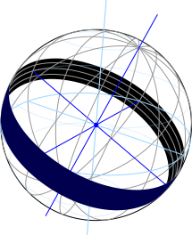
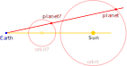

Tips & Queries: Planet Clock>
Why study how the planets move?
Working out how the planets move triggered the scientific
revolution that built our modern world.
Everyone who looks up at night must wonder what they are
looking at, and what our view tells us about where we are
standing. Aside from the occasional comet or nova, the
constellations we see never change - as if a cartographer
had painted a gigantic map on the sky...
With exactly seven exceptions: The Sun, the Moon, and five
wandering stars - the planets. (The planets Uranus and
Neptune are too faint for the unaided human eye to see, as
are the dwarf planets and asteroids.) Most people will only
notice the motion of the Sun, because that gives rise to the
seasons. If you live near the sea, you might also notice
the motion of the Moon, because it affects the tides. The
motions of the planets have no effect whatsoever on our
world.
While the planets have no physical effect on us, working
out how they move profoundly changed how we think about the
world. It's not the puzzle itself, but the process of
solving it that proved so important in this case. Here you
can follow the crucial first step in understanding what you
are looking at in the sky.
This “planet clock” is a very accurate
ephemeris, which shows you exactly where the Sun and planets
are relative to the fixed constellations of stars on any
given date. Since those motions are the only changes in the
sky you can see with your own eyes, you have before you a
tolerably complete summary of every observation of the sky
in recorded history prior to 1609, when Galileo invented the
telescope. You can go outside on any clear night and check
what this clock says with your own eyes.
By an odd coincidence, in 1609 Kepler published his first
two laws of planetary motion - which were therefore entirely
based on naked-eye data you can recreate for yourself here.
In other words, the puzzle of planetary motion and the basic
structure of our solar system was solved using only the
information here before you. Can you do what Kepler
did?
How does the “planet clock”
chart the sky?
- The Sun follows a great circle around
the
celestial sphere during the course of a year. The
constellations of the zodiac lie around this circle, serving
as convenient markers you can learn to recognize when you
look at the night sky.
- The plane of the great circle the Sun moves around (or
sometimes the circle itself) is called the ecliptic.
- The black outer ring of the “planet clock”
represents a ribbon of sky centered on the ecliptic: The
middle gray circle marked 0° is the ecliptic itself; points
outside this circle are north of the ecliptic in the sky,
while points inside the circle are south of the
ecliptic.
- The ribbon extends 9° north and south, and gray circles
are drawn 5° north and south of the ecliptic.
- The dashed radial lines show the astronomical boundaries
of the constellations of the zodiac standardized by the IAU
in 1928. Abbreviated constellation names appear between
these dashed lines, tying the black ring to what you see in
the sky.
- The boundaries drawn here for Scorpio include the
constellation Ophiuchus, whose 1928 boundary intersects the
ecliptic even though it is not one of the ancient
twelve.
- On a 3D globe of the sky, the black ring looks like a
ribbon or a very short cylinder:

- Dark blue lines show the equinox, solstice, and
ecliptic polar directions.
- Light blue lines show Earth's polar axis and celestial
equator.
- Very faint light blue circles show the tropic and arctic
circles.
- Note that the ecliptic pole lies on the arctic circle.
The north ecliptic pole is about half way between the
bright stars Polaris (near Earth's celestial pole) and
Vega.
- The solid radial lines marked every 30° around the
ecliptic show
J2000 ecliptic longitude.
- The gray circles mentioned above are J2000 ecliptic
latitude lines (including the equator, which is ecliptic
latitude 0.).
- J2000 coordinates are fixed relative to the stars, so the
planet clock shows how the Sun and planets move relative to
the fixed stars. The daily rotation is not shown.
- The gold clock hand shows the longitude of the Sun,
that is, its position in the zodiac. A fainter gold hand
shows the longitude exactly opposite the Sun.
- You can toggle additional hands for the planets by
clicking a name or symbol in the legend.
- You can also toggle the Moon. However, the motion of the
Moon only relates very subtly to the motions of the Sun and
planets, and has nothing to do with the topics discussed
here.
- You can see everything depicted on the planet clock with
your own eyes by looking at the night sky.
- The partial
exception is the Sun - you also need a good timepiece to
work out where the Sun is in the sky because you can never
see the Sun and stars together in the sky! The sky blue
sector interrupting the black ring very roughly indicates
the part of the sky which is too close to the Sun to see any
stars or planets located there.
- The exact extent of the part of the sky obscured by
daylight depends on your latitude and the time of
year.
- Stars in the side of the blue sector labeled "evening"
set too soon after sunset to be seen; stars in the side
labeled "morning" do not rise enough before sunrise to
be seen.
- If you set the clock forward or backward by many centuries
(try the year -3000, 5 millenia ago) you will notice that
the gray ring labelling the months has rotated. The months
(in our Gregorian calendar) are tied to the seasons - for
example the spring equinox is always close to March 20. The
rotation of the month dial is caused by the very slow
precession of the Earth's spin axis relative to the
constellations - the precession of the equinoxes.
How do the controls work?
- Drag Sun around sky ring to set date.
- Click year button to set year (accurate from -3000 to 3000).
- Press and hold triangles below sky ring to animate.
- Click legend symbol or planet name to toggle radial line.
- Click Show/Hide Moon button to toggle Moon.
Do you see evidence that the
planets orbit the Sun and not the Earth?
- The motion of the planets is clearly connected to
the motion of the Sun: Toggle on a planet hand by clicking
on its name in the legend, then press and hold one of the
triangle animation buttons on the lower right.
- Mercury and Venus wag back and forth about the Sun, never
far from it.
- Mars, Jupiter, and Saturn generally move around the zodiac
in the same direction as the Sun but more slowly.
- Notice that Mars, Jupiter, and Saturn reverse direction
whenever they are near opposition to the Sun - the light
gold line opposite the Sun hand of the planet clock. This
is called retrograde motion.
- Mercury and Venus also reverse direction as they pass from
the evening to the morning side (they are moving the same
direction as the Sun as they move from the morning side to
the evening side).
- In all cases, the retrograde motion of a planet through
the zodiac is tied to the position of the Sun.
Do you see evidence that
Earth is the third planet?
- For Mercury and Venus, you get a strong impression that you
have an edge-on view of roughly circular orbits around the
Sun, and the size of those orbits is less than your distance
from the Sun.
- They spend far less time going from evening to morning
than from morning to evening, as they would if they were
moving around the Sun in the same direction as the Sun is
moving around the zodiac.
- The evening to morning transit is in front of the Sun,
while the morning to evening transit is behind the Sun.
- For Mars, Jupiter, and Saturn, try thinking about
how Earth would look if you were on Venus:
- The direction to Earth from Venus is exactly 180° from
the direction you see Venus from Earth, so the path Earth
follows through Venus's sky is exactly the reverse of the
path we see Venus follow.
- However, when Venus passes between Earth and Sun,
Earth appears at opposition from Venus.
- For the same reason, Mars, Jupiter, and Saturn move
retrograde near opposition - their large orbits take them
behind you.
- Since you can see that the orbits of Mercury and Venus are
smaller than your distance to the Sun, while the orbits of
Mars, Jupiter, and Saturn are larger, Earth must be third in
order from the Sun.
Can you figure out the order
of the planets from the Sun?
- The farthest Mercury or Venus gets from the Sun is called
its maximum elongation.
- You can see that Mercury has a smaller maximum elongation
than Venus, so its orbit must be smaller.
- Earth must come third because when the others are at
opposition, you are between them and the Sun.
- Mercury also moves faster than Venus and Venus moves faster
than the Sun (that is, Earth).
- Mars moves around the sky slower than the Sun (Earth),
Jupiter slower still, and Saturn slowest of all, so if the
rule that closer orbits are faster holds, then that is their
order in distance from the Sun.
- Without the faster-is-closer rule, ordering the planets
beyond Earth by distance is much harder. You need the
quantitative surveying techniques you will learn later to
make much progress in measuring the geometry of the orbits
of Mars, Jupiter, and Saturn.
- However, laws like faster-is-closer will always play a
central role in understanding the positions of planets.
When you try to chart the solar system, spatial geometry is
important, but unless your chart shows how the positions of
the planets change it will be useless.
How would you test these ideas?
You can work through the sections in the sidebar menu on
the right from top to bottom to learn how Johannes Kepler
tested the hypothesis that the planets orbit the Sun.
Kepler's brilliant insight was that if the planets move
around the Sun in periodic orbits - that is,
tracing the exact same loop at the exact same rate every
revolution - then you can use them as a surveyor uses
landmarks to work out their relative distances (which you
cannot see directly). He is best remembered for fitting his
surveyed orbits to formulate his three laws of planetary
motion, but astronomers had been fitting orbits to
observations for millenia. Using surveying techniques to
map the planets is the crucial original leap Kepler
made.
Tips & Queries:
<Earth Period>
What does the plot in the right panel show?
- The plot shows the time in days required for the Sun
to move to each point around the ecliptic. It covers
ten complete revolutions (sidereal years).
- To make this plot you need one measurement of ecliptic
longitude and the exact time of that observation every
five days or so, for a total of about 730
observations.
- The accuracy achieved by Tycho Brahe for this kind of
naked-eye measurement was about 10 seconds in time and
1/30 degree in angle, and Kepler required this level of
accuracy to do his surveying.
- The blue line passes through these data points.
- The first observation is plotted as 0 days and 0 revs.
- The gold circle is at the location of the date currently
shown on the planet clock, so by running the planet clock
forward or back you can see which point on the blue line
corresponds to which observation date.
- Each yellow box shows the data collected in one year. The
width of the boxes is always exactly one revolution. The
height of the boxes is your current estimate of that
period.
- Your goal is to measure as accurately as possible the
number of days required for the Sun to complete one
revolution.
- Adjust your estimate by dragging the slider on the
right edge of the panel up or down.
- The yellow line is the diagonal of all the boxes (which
are stacked corner to corner), so you want to adjust your
period estimate to make the straight yellow line coincide
with the blue data line as best you can.
- The yellow diagonal line is called the “mean
Sun” - a theoretical point in the sky which moves
along the same path as the Sun but at a constant
rate.
- To be able to make a more accurate estimate, click the
lower triangle button to zoom in. This will make ten copies
of the data, and shift each of the ten copies so a different
one of the boxes overlays the box in the lower left corner.
- The x-axis now shows only one revolution and the y-axis
shows only one year.
- Drag the slider up or down to an
incorrect year estimate to see how the blue lines fail to
repeat if your period estimate is incorrect.
- Run the planet clock to see how the Sun marker follows
the blue lines from one year to the next. After you are
satisfied you understand this stacked plot of your ten
years of data, you can again adjust your year estimate
as accurately as possible.
- A more accurate way to present this kind of data is to
think about the difference between the actual position of
the Sun (blue line) and the mean Sun (yellow line). Click
the zoom in button a second time to see that picture.
- The mean Sun depends on your best estimate of the
period - you can change it with the slider.
- Although it is the mean Sun line that is changing, at
this highest zoom level it is the blue true Sun lines
which move because you are plotting the
difference.
- The deviation from the mean Sun line at the highest zoom
level clearly shows the Sun does not move at a constant rate
around the ecliptic, but speeds up and slows down in a
regular, repeatable way.
- The deviation is about 4 days over the course of the
year.
- You can refine your period estimate to within about
0.001 day (with ten years of data) - about a minute and
a half.
- Notice the precision with which the Sun repeats its
motion every year.
How do the controls work?
- Use planet clock controls to set starting date.
- Click Reset button (in planet clock dial) to collect ten
years of Sun position data.
- Click lower triangle (in upper left corner) to zoom in plot.
- Click upper triangle (in upper left corner) to zoom out plot.
- Drag slider (along right edge) up or down to change your
estimate of Earth's orbital period.
What feature strikes you most about the motion of the Sun?
- The most striking thing about the motion of the Sun is how
precisely it repeats every year. Here you can check that
the Sun returns to exactly the same place in the zodiac
every 365.256 days - to within 0.001 day (a minute and a
half)!
- No natural phenomenon on Earth recurs nearly that
precisely - in fact, until the last century or two, no human
contrivances had that kind of precision.
- What is perhaps even more impressive - and important - is
that this motion is not quite uniform. The Sun is speeding
up and slowing down as it moves through the constellations
in exactly the same pattern over and over again.
- The combination of exact periodicity and non-uniformity
hints at some great underlying regularity. Newton finally
explained this ancient mystery by recognizing the law of
universal gravity, but that is a story for another place.
Here you will focus on simply describing this periodic
motion in as simple, accurate, and general a way as
possible.
- Since the apparent diameter of the Sun in the sky remains
constant, at least as far as you can tell using naked-eye
observations, you know that the distance from the Earth to
the Sun must change very little, if at all, during the
course of the year.
- However, remember how nearly straight the blue data
line appeared on the two lower magnification levels in
the right panel. Is it possible that the distance to
the Sun is changing by a similar tiny amount as it moves
around the sky?
- If the distance to the Sun is changing slightly during the
year, the precise periodicity of its motion around the sky
strongly suggests that any distance changes are also
periodic, repeating exactly every year.
- In other words, periodicty in the motion around the
sky strongly suggests that the Sun is moving around the
Earth (or vice versa) along a closed path in space, like
a train around a fixed track on an unvarying
schedule.
What does the periodicity of the Sun suggest about planetary
motion?
What do you mean when you say that the planets all move
around the Sun and that the Earth is the third planet?
Besides giving a vague description of the geometry of the
solar system, you must be saying that if you could view the
solar system from the Sun, the planets would all move around
the zodiac in a similar manner. You mean that the planets
are somehow alike in their motion around the Sun. And if
the Earth is just another planet (in this respect), you are
saying you know one example of whatever this general kind of
motion may be: You know exactly how the Earth appears to
move around the zodiac as viewed from the Sun, because it is
the same as the motion of the Sun you have measured from
Earth, only rotated 180°.
Thus, from the striking periodicity of the Sun's motion,
the Earth pretty certainly moves in a closed path around the
Sun at a not-quite-uniform but precisely repeating rate.
And if the motion of the other planets is somehow similar to
Earth's, surely this must be the general rule: The planets
all move in periodic closed orbits around the Sun. Another
way to think about it is that, when viewed from any planet,
the Sun will exhibit the same perfectly periodic motion
around the zodiac that you see from Earth.
But this periodic closed orbit hypothesis is an idea you
can test by carefully studying your planetary position data!
If it is true, then any planet returns to exactly the same
point on its orbit after exactly one of its periods. That
implies a certain relationship between observations made on
dates spaced by one period in time, and you can check
whether your observations are, in fact, so related. Like
any hypothesis, checking this is not mathematical proof that
the hypothesis is true, but it is an extremely strong
argument in its favor.
Tips & Queries:
<Orbit View>
What does the diagram in the right panel show?
- The diagram shows three different pictures or paradigms for
the solar system: heliocentric, geocentric, and epicycles.
- In all cases, you are viewing the ecliptic plane
from a position far from the solar system in the
direction of the north ecliptic pole.
- The three pictures are indistinguishable, in the sense
that the relative positions of the Sun and planets are
exactly the same in all three pictures. There is no
observational way to distinguish among them without
reference to bodies outside the solar system.
- The Sun-Earth and any Earth-planet lines you have
toggled on in the planet clock are highlighted. Note
that these lines in the diagram on the right remain
exactly parallel to their counterparts in the planet
clock on the left: These paradigms all model the motions
you see in the sky perfectly as you move the planet
clock around.
- None is “right” or “wrong” -
the question is usefulness, not correctness.
- The heliocentric picture is the modern accepted model of
the solar system, as advocated by Copernicus and surveyed
by Kepler. The Sun is at the center, and the planets move
around it in closed orbits.
- The geocentric picture was proposed by Tycho. It is
identical to the heliocentric picture, except the Earth is
translated to remain stationary at the center, forcing the
Sun to move around it. All of the closed planetary orbits
remain centered on the now moving Sun. The gold orbit of
the Sun around the Earth is identical to the blue orbit of
the Earth around the Sun in the heliocentric picture, except
it is rotated 180°.
- The epicycles picture is a modifed version of the ancient
Greek solar system described in Ptolemy's Almagest but
dating from much earlier. The modification here is to set
the arbitary scale factors and change the epicycle shapes
slightly (from circles to ellipses), so that this epicycle
picture is geometrically identical to the geocentric
picture. However, the model retains all of the key
geometrical features of Greek epicycle models.
- For Mercury, Venus, and the Sun, the epicycles
picture is identical to the geocentric picture. The Sun
serves as the center of these two epicycles.
- For Mars, Jupiter, and Saturn, the planetary orbit
path has been moved from the Sun to the Earth. A new
radial line is drawn from the Earth to a point on this
Earth-centered planet orbit, and a copy of the gold Sun
orbit is centered at the end of this radial line. Each
planet now moves around a small circle - its epicycle, a
displaced copy of the Sun's orbit - centered on a larger
circle centered on the Earth.
- A faint new point and line appear on the planet clock
for Mars, Jupiter, or Saturn (when you toggle on its
radial line). This is the direction from the Earth to
the imaginary point at the center of the epicycle (the
gold copy of the Sun's orbit).
- If you run the clock forward, you will see that the
outer planets wag back and forth around this epicycle
center point in exactly the same way that Mercury and
Venus wag back and forth around the Sun: The epicycle
center moves around the zodiac smoothly; the planet
slowly overtakes it prograde, then quickly crosses back
over it retrograde.
- The epicycles paradigm was designed to make the motion
of the outer planets resemble that of the inner planets
in this wagging motion.
How do the controls work?
- Click upper triangle (in upper left corner) to zoom out view.
- Click lower triangle (in upper left corner) to zoom in view.
- Click heliocentric/geocentric/epicycles button to change
pictures.
Zoom in all the way to watch the inner planets in the
heliocentric picture. Zoom out one step to watch the inner
planets in the geocentric or epicycles picture. Zoom out a
second step to watch Jupiter (in any picture). Zoom out all
the way to watch Saturn.
What do you like about the heliocentric picture?
When you adopt the heliocentric picture, you are likely to
guess that the motion of the planets as viewed from the Sun
has the same crucial property as the motion of the Sun as
viewed from Earth: that every planet, like Earth, travels
periodically along a closed path around the Sun. If this
hypothesis is true, then you can survey the solar system to
find the shapes of all the orbits and how each planet speeds
up and slows down as it moves around its orbit. The
heliocentric picture strongly suggests a surveying model you
can test.
Of course, whatever test you devise will also confirm the
other two pictures, since they are geometrically equivalent.
However, by demoting the Earth from its central position and
supposing it to behave like just another planet, you've
already suggested that the orbits of the other planets should
be periodic closed loops around the Sun. When the Earth was
different from the other planets, the assumption that their
orbits around the Sun resemble the Sun's orbit around the
Earth in this way feels like a separate hypothesis.
A second reason to believe that the Sun should be at the
center is that you know it is far, far larger than the Earth
or any other planet. The planets always appear as starlike
points, while you can see the disk of the Sun in the
sky.
What do you like about the geocentric picture?
You might be attracted to the geocentric picture because it
makes the relationship between the radial lines you actually
observe on the planet clock and the radial lines in the map
of the ecliptic plane really obvious. Wherever you are, you
are always at the point from which all your sight lines
emanate. Putting the Earth at the center plays into that
perceptual truth.
Tycho had an interesting technical reason for believing
that the Earth is stationary, while the Sun and planets
orbit it: If the Earth moves around the Sun, then by
observing the positions of the stars very carefully, you
should be able to detect slight changes in the shapes of the
constellations as we view them from different perspectives.
Despite his best efforts, however, he could not detect any
such stellar parallaxes. He calculated that the stars must
therefore be at least several thousand times farther away
than the Sun. He reasoned that this vast difference in
scale between the distance to the planets and the distance
to the stars was even less likely than the Earth being
stationary. But the universe holds many surprises.
What do you like about the epicycles picture?
The epicycles picture was the backbone of astronomy for
over two millenia, accepted by nearly all the most brilliant
ancient Greek and medieval Islamic astronomers. You see
here that their model can be adjusted to be equivalent to
our modern heliocentric picture, so they certainly were not
completely on the wrong track. It was a very successful
descriptive model even in its imperfect forms, and it's hard
to argue with success.
The original geometric attraction to the epicycle picture
is that Mercury and Venus are pretty clearly moving around
the Sun as the Sun moves around the zodiac. That is, they
are moving around a circle whose center is in turn moving
around us. This kind of motion is much easier to visualize
when the radius of the epicycle is less than the radius of
its center.
The geocentric picture features epicycle descriptions of
Mars, Jupiter, and Saturn, but the epicycle radius is larger
than the radius its center moves around (the Sun, as for
Mercury and Venus). You can get exactly the same motion by
swapping the big circle and the small circle, so that the
small one - in this case the orbit of the Sun - becomes the
epicycle, while the large one becomes the path for its
center.
Watching the outer planets wag back and forth around their
ghostly epicycle centers on the planet clock may help you to
understand what the ancients saw in epicycles. Remember
that the Sun is always below the horizon when you can see
any planet - so in a way it is an imaginary point as
well.
How did the ancient epicycles picture differ from this one?
The ancient Greeks noticed that you can rescale the center
point and orbit of any planet, keeping the Earth fixed at
the center of this scaling operation, without changing any
directions as observed from Earth:

Note that in such a scaled orbit, the center of the
epicycle is at an imaginary point in empty space that lies
along the Earth-Sun line. Thus, in the ancient epicycles
models, the center of the epicycle was always at an
imaginary point, not just for outer planet orbits as in the
modified epicycles picture drawn in the right panel of this
section.
Unlike the translations of the heliocentric, geocentric,
and epicycles paradigms drawn here, you can apply a
different scaling to the orbit of each individual planet.
Like the translations, you cannot disprove such a model by
observations of the directions to the planets, since by
construction those directions remain fixed. The question
was not definitively settled until Galileo observed the
phases of Venus through his telescope, proving that its
prograde conjunctions are behind the Sun and its retrograde
conjunctions in front of the Sun. By naked eye, there is no
way to tell. Since the primary reason anyone wanted to
independently scale the planetary orbits was the belief that
nothing could move from in front of the Sun to behind it
(penetrating its "sphere"), the idea of individually scaled
orbits died with Galileo.
Tips & Queries:
<Mars Period>
What does the plot in the right panel show?
- You need to use at least one planet as a fixed landmark
in order to survey the solar system.
- The only way to do that is if the planet returns
periodically to the same position. If it does, you need to
know the period of its orbit around the Sun in order to know
when it has returned to the place you choose for your
landmark.
- Mars is by far the best landmark choice, so here you will
explore how to adapt the technique you used to determine the
orbital period of Earth to the case of Mars.
- The plot in the right panel here behaves analogously
to the right panel in the Earth Period section, with all
the same controls.
- Here, when you click the Reset button on the clock,
you collect twenty years of virtual position data for
Mars, with observations spaced ten days apart. Kepler
used twenty years of Mars data from Tycho for his
survey.
- The Mars data of time (in days) versus longitude (in revs)
appears as a series of light red S-curves along the diagonal
of the plot.
- The kinks in the S-curves are the retrograde parts
of Mars's orbit, and gaps between them are the times
when Mars is too close to the Sun to be able to make any
observations.
- When you move the planet clock in the left panel, a
faint red dot traces the time-longitude data along the
plot in the right panel, so you can see which date
corresponds to each data point.
- Unfortunately, these data record the position of Mars on
the zodiac from our point of view on Earth. In order to
determine the period of Mars's orbit around the Sun, you
need to know where Mars appears as viewed from the Sun, so
you can judge how long it takes to go around exactly once.
- Fortunately, on each S-curve there is exactly one point
where you do know where Mars appears when viewed
from the Sun: When Mars is at opposition, we on Earth are
seeing it at exactly the same ecliptic longitude as it would
have as viewed from the Sun.
- These opposition points are marked in dark red on
the plot.
- Of all the data you collected over that twenty year
span, only these nine or ten opposition points are of
any use for making an accurate estimate of the period of
Mars.
- In practice, the opposition points are interpolated
between two actual observations. They are treated here
as if they were points you actually observed.
- The yellow boxes along the diagonal again have a width of
exactly one revolution, and a height of one estimated Mars
period, which you can adjust using the slider on the right
edge.
- The yellow line again has the slope of the diagonal,
but instead of actually being the diagonal, it is
shifted to pass through the first opposition point.
- You want to adjust the slope of this yellow line - the
period of Mars - to pass through all the opposition
points as nearly as possible.
- When you zoom in, the first step once again copies and
shifts all the year boxes to stack them on top of the first
box at the lower left.
- Since only the opposition points are of interest, they are
connected by an arbitrary smooth curve (a natural cubic
spline here, but other choices work just as well).
- Although in reality each of these points is
separated by over a full period from the previous one,
there really is a continuous orbital path of time versus
ecliptic longitude as viewed from the Sun -
something like the dark red curve - which passes though
each of the opposition points.
- Twenty years of data was not an arbitrary choice: In
twenty years the oppositions progress around the zodiac
just slightly more than once.
- This gives you a small overlap section in the red
curve connecting them.
- By adjusting the estimated Mars period until the
overlapping sections match as well as possible, you can
get a pretty accurate estimate of Mars's period, within
perhaps half a day or a bit better.
- Unlike the case for Earth's orbit, the red curve that
constitutes your best guess at how Mars moves around the Sun
differs quite markedly from the straight yellow line.
- Mars speeds up and slows down as it moves around the
Sun far more than Earth.
- This exaggerated variation from uniform motion is
another reason why Mars is the best landmark
choice.
- When you zoom in a second time, the plot again switches to
show you the difference between the red curve and yellow
line on the vertical axis.
- You can make your final adjustment here to find the
period of Mars to within a few hundredths of a day.
- Unlike for the Earth, the overlap sections at this zoom
level usually will not match very well.
- This is not because the orbit of Mars is less periodic
than Earth. It is because your data is much sparser -
you have only nine or ten points on Mars's orbit, while
you had 75 on Earth's.
- Remember that the red curve has an arbitrary shape -
it could be any smooth curve passing through the red
opposition points. The actual time-longitude curve
would match perfectly.
- Because of the arbitrariness of the red curve, your
estimate of Mars's period will be less accurate than your
estimate of Earth's period. Once you begin surveying, you
will be able to tighten up this estimate. For now it is
easily good enough to begin surveying.
How do the controls work?
- Use planet clock controls to set starting date.
- Click Reset button (in planet clock dial) to collect twenty
years of Sun position data.
- Click lower triangle (in upper left corner) to zoom in plot.
- Click upper triangle (in upper left corner) to zoom out plot.
- Drag slider (along right edge) up or down to change your
estimate of Mars's orbital period.
How could you find the periods
of the other planets?
- Each planet has its own set of challenges. With twenty
years of data, you can use this same opposition technique to
make a pretty accurate estimate of the period of Jupiter.
To use it for Saturn, you would need over thirty years of
data.
- Since they are never at opposition, you can never be sure
of the direction of Mercury or Venus when viewed from the
Sun.
- Your best alternative is probably to estimate the
time of inferior conjunction - the retrograde
conjunction - as best you can.
- The planet is not visible for the shortest period of
time near inferior conjunction, so your interpolated
time of conjunction will be more accurate than for
superior conjunction.
- To partly compensate for the inaccuracy of the time of
inferior conjunction compared to opposition, twenty
(Earth) years of data gives you many more revolutions of
Mercury or Venus than you had of Mars.
- In practice, however, the best approach is to use the
orbits of Mars and Earth you will generate in your upcoming
survey to derive Kepler's first two laws.
- These laws reduce all orbits to just a few
parameters.
- You can then use the position data you actually have
(as opposed to interpolated inferior conjunctions) to
find the parameter values which best fit your
observations.
- You will use this technique in the Third Law
section.
Tips & Queries:
<Survey Orbits>
What does the diagram in the right panel show?
- The diagram is the same map of points in the ecliptic plane
as in the Orbit View section.
- There, the points on the orbits were provided for
you by magic.
- Here, you will actually do the work to survey a large
set of points on the orbits of the Earth and
Mars.
- This work is divided into three steps:
- Select one of the nine or ten oppositions you found in
the Mars Period section to serve as a reference landmark
point on Mars's orbit.
- Starting from this reference point, you will step
forward or backward by multiples of your estimated Mars
period. This allows you to survey the positions of
several points on Earth's orbit.
- Starting from each of these different points on
Earth's orbit, you will step forward or backward by
multiples of Earth's period. This allows you to survey
several points on Mars's orbit.
- Move forward through these steps by clicking the Next
button, back by clicking the Prev button.
- Unlike the period determination, this procedure
eventually makes full use of all of your twenty years of
Mars observations, not just nine or ten opposition
points.
- When you select an oppostion in step 1, the radial line
from the Sun to Mars at that opposition is highlighted in
black. (It is really from the Sun to the projection of Mars
into the ecliptic plane.)
- You know the direction - that is, ecliptic longitude
- of this line segment, but you do not know its
length.
- However, you do not know any distances in the
ecliptic plane. Therefore, you are free to use this
black segment as a reference ruler you will use to
measure distances in the solar system.
- The actual dimensions of the solar system in
kilometers were unknown until long after Kepler.
- In step 2, you use this reference segment to survey eight
or nine points on Earth's orbit.
- These are drawn with yellow Earth-Sun lines and red
Earth-Mars lines.
- As you click the ±M buttons to step your observation
time forward or back one Mars year at a time, the planet
clock will automatically move to the time of that
observation, and the yellow and red lines will be
highlighted on the right panel.
- The point on Earth's orbit has been placed where it
must be to make the highlighted yellow and blue lines on
the right panel exactly match the directions of the
yellow and red lines on the planet clock.
- This is precisely how surveyors
triangulate two known landmarks - the Sun and your
reference opposition point on Mars's orbit in this case
- to chart their own position.
- Notice that one or two points are missing on this ring
of points on Earth's orbit. These points are too close
to conjunction to be able to see Mars. You will find
their positions later when you have other points on
Mars's orbit.
- When you advance to step 3, you will be able to step not
only by Mars periods, but also by Earth periods.
- The diagram simultaneously steps all of the
observations you made of Mars at the reference point
forward or backward by one Earth year.
- Since Mars always moves to the same place after any
fixed time step, you will be looking at Mars when it is
at a single new place from eight or nine different
viewpoints.
- If your hypothesis that Mars is moving periodically
relative to the Sun is correct, all eight or nine of the
sight lines on these dates should converge at a single
point - that new point on Mars's orbit.
- Click the ±E button and see what happens.
- Aha! Look at that!
- Step back and forth with the ±M buttons to move the
planet clock to over a half dozen different observation
dates and check that all those red Mars sight lines
really do converge at a single point.
- Drag the slider on the right edge away from the true
Mars period. The observation sight lines no longer
converge properly - you need to be able to step exactly
one Mars period to get fixed surveying landmarks and
make the scheme work.
- As you step forward and back Earth years, you
slowly lose points on Earth's orbit because they will fall
outside your twenty year data window. You also occasionally
gain a new point as it moves into your twenty year window.
- Completely new points on Earth's orbit are marked by
a faint yellow Earth-Sun line in addition to the red
Earth-Mars line.
- These new points are located by triangulation using
the point where all the sight lines from existing points
on Earth's orbit converge.
- Hence as you add new points on Mars's orbit you also
pick up new points on Earth's orbit.
- Since the periods of Earth and Mars are incommensurate, you
could continue this process indefinitely.
- The more periods you step away from your reference
opposition date, the more the error due to any
inaccuracy in your Mars or Earth period grows.
- Since the uncertainty in your Mars period is greater,
this calculator limits you to ten Mars period steps away
from your reference opposition in either direction.
- This arbitrary limit always produces 21 points around
Earth's orbit and about 40 points around Mars's
orbit.
- Because you have collected observations of several
different points on Mars's orbit from each point on
Earth's orbit, and you have viewed each point on Mars's
orbit from several different points on Earth's orbit,
you have used observations made on a total of about 320
dates in order to survey these 60 odd orbital
points.
- The diagram plots all the surveyed points on both
orbits as faint dots.
What do the numbers in the upper
right corner in the third step mean?
- When you observe a new point on Mars's orbit from several
different points on Earth's orbit (spaced in time by
multiples of Mars's period), you add to your chart of
points by plotting the common intersection of the direction
of Mars you observed at each of those times, starting from
the position of the Earth points you previously got by
triangulating a previous point on Mars's orbit.
- However, those lines will never exactly intersect at
a common point; in fact, if you use the actual direction
in 3D - latitude as well as longitude - no two lines
will exactly intersect at all. The lines will always be
skew.
- If the common point of intersection is only
approximate, how do you compute exactly where to plot it
on your chart of Mars's orbit?
- The modern approach to this kind of problem is called least
squares fitting.
- A least squares fit is a computationally convenient
way to define the best compromise point: The lines may
not all intersect at any point, but there will always be
a point which lies at the minimum RMS (root mean square)
distance from all the lines.
- However, in this case, you are measuring a direction -
angles of longitude and latitude - so you really ought
to find the point that minimizes the RMS angle by which
the line from Earth to this point deviates from your
measured direction.
- The calculator that generates this diagram does just
that: Each new point on Mars's orbit is placed at the
position that minimizes the RMS angular deviation from
all of your measurements of Mars at that point (from
previously charted points on Earth's orbit).
- Since both latitude and longitude measurements are used,
this gives a position of Mars in 3D, even though this
diagram only shows the projection of that point into the
plane of the ecliptic. The full 3D position will be shown
in the Mars Inclination section.
- The numbers above your current estimated Mars period are
two measures of the total angular deviations of all 40 of
these fitted points on Mars's orbit, using all 320 direction
measurements:
- The bottom number is the RMS angular deviation of
all of your measured directions from the direction of
the charted Mars point from the charted Earth
point.
- The top number is the largest angular deviation of any
of the 320 observations from its corresponding Mars
position on the chart.
- Using these numbers, you can make a final adjustment
to your estimated period of Mars: Move the slider until
you minimize one or the other of these two numbers -
they will both minimize for nearly the same
period.
- After this final period adjustment, you can usually drive
the maximum angular error down to about 0.02° and the RMS
angular error to about 0.01°.
- Tycho, the last and greatest naked-eye astronomer in
history, measured the positions of planets with an
accuracy of about 0.03° - about 1/15 the disk of the Sun
or Moon, and Kepler used his data. (Someone with acute
vision cannot distinguish two marks separated by less
than about half that, or half a millimeter viewed at a
distance of a meter.)
- Notice that the groups of lines converging on every
point around Mars orbit converge most accurately for a
single value of the period of Mars.
- (Any error in the period of Earth would lead to a similar
failure of your survey lines to converge. For simplicity,
this calculator uses the exact value of 365.25636 days
rather than the value you found in the Earth Period section.
As noted, it is much easier to determine the period of Earth
than the period of any other planet.)
How do the controls work?
- Click on opposition to select reference opposition.
- Click Next button at upper right to move to the next step.
- Click ±M buttons at lower right to step Mars periods.
- Click ±E buttons at lower left to step Earth periods.
- Click Prev button at upper left to return to the
previous step.
- Drag slider (along right edge) up or down to change your
estimate of Mars's orbital period.
How confident are you in the
orbital points you just surveyed?
- You have discovered a very well hidden regularity in twenty
years of painstakingly measured postions of the Sun and
Mars.
- The greatest geniuses of astronomy pored over data
very similar to this for two millenia without finding
these relationships among the positions.
- The striking geometrical relationships are buried two
levels deep - you first need to find a set of points on
Earth's orbit by stepping by Mars years from an
opposition, and then find a new point on Mars's orbit by
stepping by an Earth year, and only then do you get to
see the incredible accuracy with which these several
sight lines converge at a single point.
- On the other hand, these steps are routine for terrestrial
surveyors.
- The trick that you need to wait a certain fixed
period of time for your landmarks or viewpoints to
return to their positions has no real analog in ordinary
surveying.
- Kepler is the one who first figured out how to put the
two ideas together.
- You cannot doubt that your survey points represent an
accurate map of the positions of the Sun, Mars, and Earth,
any more than you can doubt a terrestrial map made by
surveyors.
- In order to make this map, you had to assume that
the planets periodically return to the same positions,
each after its own fixed period.
- You then adjusted the periods precisely in order to
make your surveying techiniques self-consistent. Is
this not circular reasoning?
- Yes, but by adjusting only one number (two if you
count the period of Earth), you were able to exactly fit
over 320 independent observations of the directions of
the Sun and Mars.
- Therefore, it is very hard to doubt that the
hypothesis of periodic orbits is correct, in addition to
the geometry of your survey points.
- Furthermore, you can repeat this survey for any twenty
year data set you please throughout the ages, or more easily
using a different opposition in the same twenty year window
for the starting reference point. The specific points you
get around the orbits will be different, but the convergence
of the sight lines on all the different days will be just as
accurate.
Have you proven Earth and Mars repeat
closed orbits around the Sun?
You have proven that Earth and Mars move as if
they followed repeating closed orbits around the Sun. Of
course, we now routinely measure the tiny discrepancies in
the orbits of the planets from this rule. Though the rule
may not be exact, nevertheless it is very, very
accurate.
Would the astonishing consistency of Kepler's surveying
technique have convinced ancient Greek astronomers that the
planets orbited the Sun rather than moving along scaled
orbits whose centers merely aligned with the direction of
the Sun? They may well have acknowledged only the
periodicity of the motion and clung to their scaled orbits.
At the same time, they would certainly have pounced on
Kepler's surveyed orbital shapes and recognized them as the
true shapes of their deferents and epicycles.
Do you think the other planets repeat
closed orbits around the Sun?
Your first order of business is to check that the other
planets do indeed repeat closed orbits. Are you the kind of
person who hopes that the answer is yes? Or no? Is your
work done if the answer is yes?
Tips & Queries:
<Mars Inclination>
What does the diagram in the right panel show?
- Initially, the right panel shows the same chart of the
orbits of Mars and Earth as the third step of the Survey
Orbits section. However, the points you charted on Mars's
orbit are now plotted in 3D, as you can see by dragging the
sliders on the bottom and right edges.
- You can see that your surveyed points all lie in a
single plane containing the Sun, but tilted at a small
angle away from the ecliptic.
- Because this orbital inclination of Mars is so small,
you should magnify the z-coordinates by clicking the 10×
button so you can clearly see the tilt.
- Be sure to click on the point on Mars's orbit where
the red sight lines converge to turn them off as you
familiarize yourself with this diagram.
- The faint blue line through the Sun is the intersection of
the best fit plane to your Mars survey points with the
ecliptic plane, which is called the line of nodes.
- The ecliptic longitude of this line of nodes
(specifically the ascending node) is the number at the
top right of the diagram.
- The angle between this best fit plane and the ecliptic
plane, the orbital inclination of Mars, is the number
under the ascending node longitude.
- Click the Reset button at the lower left to return to
the map of the ecliptic plane. Now drag the bottom
slider until the blue node line is vertical (you can use
the stationary tick mark at the top of the diagram to
align it exactly).
- Drag the right slider all the way to the top
to get the view along the line of nodes, exactly edge on
to both the ecliptic and the plane of Mars's orbit.
- Go back to 1× z-magnification to see how small the
tilt really is.
- The ring of faint red dots are the projections of your
dark red surveyed points into the ecliptic plane. Viewed
from Earth, these points have the same ecliptic longitude as
Mars, but zero ecliptic latitude.
- You can click on any of the dark red points to toggle on or
off red sight lines for all of the observations you made of
Mars when it was at that position through your twenty years
of data.
- The corresponding blue points on Earth's orbit will
highlight.
- When you view any set of these sight lines from
different perspectives using the sliders, you can see
that they all converge to a single point in 3D, not just
in the plane of the ecliptic.
- Finally, as a curiosity, if you jump to the year -3000 and
survey the Earth and Mars orbits then, the Mars Inclination
section will show you something very interesting:
- In addition to the plane of Mars's orbit being
inclined a couple of degrees, the plane of Earth's orbit
is also inclined a fraction of a degree.
- This is because the J2000 coordinate system adopted
here puts zero ecliptic latitude in the plane of the
Earth's orbit in the year 2000, and the Earth's orbital
plane really does change ever so slowly relative to the
fixed stars.
- This is not to be confused with the much quicker (but
still slow) precession of the equinoxes that shifts the
calendar - unlike equinoctial precession it has nothing
to do with Earth's spin axis.
How do the controls work?
- Drag bottom slider to rotate ecliptic plane around Sun.
- Drag right edge slider to rotate view out of ecliptic plane.
- Click one of the magnify z buttons at upper left to select z
magnification.
- Click any red point on Mars orbit to toggle on or off
sight lines from Earth orbit points.
- Click Home button at lower left to restore original
orientation.
What features are most remarkable about
your survey points?
The fact that all the Earth-Mars sight lines emanating from
your surveyed positions of Earth at the dates you found by
stepping multiples of Mars years all converge at a single
point in three dimensions is very striking. Kepler's survey
technique works in three dimensions, as it must to be
successful.
As if all these convergences were not remarkable enough,
you should also reflect on the fact that the survey points
all lie exactly in a single plane containing the Sun. You
did not assume this - the only thing you assumed to make
your survey was that the orbits of Earth and Mars were
periodic. You already knew that Earth's orbit was confined
to a plane containing the Sun, because that is how you
defined the plane of the ecliptic. But you now know that
not only is Mars's orbit as periodic as Earth's, but that it
too is confined to a plane containing the Sun.
It seems as if Mars, and probably the other planets,
completely ignore one another - only the Sun seems to exert
any influence over the motion of the planets. Heliocentrism
is not about what body lies at the the center so much as
what body dominates the dynamics. The answer is apparently
that every body except the Sun is negligible.
Tips & Queries:
<First Two Laws>
What does the diagram in the left panel show?
- The points in the ring are the ones you found in the
Survey Orbits section, plotted in the plane of the orbit.
In the case of Mars, this is tilted about 2° from the
J2000 ecliptic plane you have used for orbit plots until
now.
- Drag the three round buttons around to adjust the
perihelion (point nearest the Sun), aphelion (point
farthest from Sun), and the line of apses (radial line
through the Sun connecting perihelion and aphelion).
- The numbers at the bottom left show the perihelion and
aphelion of your current fit. The numbers at the bottom
right are the three conventional orbital parameters:
The a is the semi-major axis (average of
perihelion and aphelion). The e is eccentricity
(displacement of center from Sun as a fraction
of a, equal to the difference between perihelion
and aphelion divided by their sum). The angle is
the counterclockwise angle of perihelion from the
x-axis.
- Your goal is to adjust the three orbital parameters to
fit your survey points as closely as possible. One
systematic procedure is:
- If all points lie outside your current orbit fit,
drag the perihelion button outward until your fit
just begins to touch points on the orbit. Otherwise,
drag the aphelion button inward (this will
change perihelion too once they become equal) until
all points just barely lie outside it.
- In either case, drag the angle button
around to align the perihelion with the points which
are just touching your fit.
- Drag the aphelion button outward until your
fit just touches the points nearest aphelion.
- Alternate among the three round buttons, moving them
to minimize the error number in the upper left
corner.
- The error number in the upper left corner is the RMS
(root mean square) distance of your orbit fit from your
surveyed points. The units are the same as for the
perihelion and aphelion numbers at the lower left, namely
AU (astronomical units, the a value for
Earth).
- Click the Ellipse/Circle button to fit an eccentric
circle (simply a circle whose center is displaced from the
Sun) instead of an ellipse with one focus at the Sun.
- Click the Mars/Earth button to fit Earth's orbit instead
of Mars's orbit.
- Click the Coarse/Vernier button when you want to make
fine adjustments to your orbital fit parameters. This
does two things: First, you have to move your mouse 20
times farther to change the parameter by a given amount.
Second, a set of "ghost" points become visible, which are
plotted at a distance from your orbit fit that is 20 times
the distance of the actual solid survey points. If you
can get all the ghost points to coincide with the actual
points you have a perfect fit.
- Click the Auto button if you get frustrated trying to
make very small adjustments even on Vernier. You may be
able to get a slightly better fit after clicking Auto, but
Auto will get you almost all the way to the minimum error
fit.
What does the plot in the right panel show?
- In the left panel, you have parametrized the shape of
the orbits of Mars and Earth - Kepler's first law. In the
right panel, you will characterize how the planet speeds
up and slows down as it moves around the shape you have
fit - Kepler's second law.
- The easiest way to describe the position of the planet
on its orbit is to specify its angle around the Sun from
some standard point, usually taken to be its perihelion
point.
- You saw in the Earth Period section that this angle
changes with time at an almost, but not quite, uniform
rate. After you have fit Earth's orbit in the left panel,
note the direction of the line of apses you have set.
Return to the Earth Period section and zoom in twice, then
drag the Sun marker on the clock around to the steepest
downward point on the sinusoidal curve - it will be in
early January (if you are within a few hundred years of
the present). Notice that the angle of the Sun hand on
the clock matches the perihelion angle you set in your fit
in this section! This means the Sun is moving around
fastest at perihelion and slowest at aphelion.
- Drag the triangle button on the left panel around to
highlight the area enclosed by the line from the Sun to
the perihelion point, your orbit fit, and the line from
the curent point on your orbit back to the Sun.
- This will show a white dot on the graph in the right
panel, which shows you the area of the highlighted area
in the left panel (as a fraction of the total area of
the elliptical or circular orbit).
- Since the radius is smaller near perihelion, a given
change in angle there produces a smaller change in area
than elsewhere. Kepler noticed that meant if the area,
instead of angle, were changing at a constant rate, the
point would move faster near perihelion and slower near
aphelion, as you have seen it does.
- Therefore, instead of time as a function of angle, the
plot in the right panel shows time as a function of
area. The white line is a straight line going from
zero days at area zero to one period (of Mars or Earth)
at at area one.
- Each orbital point is plotted at the fit area at the
same angle as the surveyed point in the left panel, and
the time of those observations modulo one period, shifted
in time so that the reference opposition you chose in the
Survey Orbits section lies exactly on the white line.
- Click the zoom in button to plot the difference between
the survey point times and the white line instead of the
times themselves. You can click zoom in a second time
for an even higher magnification of the vertical
axis.
- At the first zoom level, play around with the fit
adjustment buttons in the left panel to see how they
affect the area-time relationship.
- Recall that the standard ruler in your orbit survey was
the distance from the Sun to Mars at your reference
opposition. However, there is no reason you need to call
this distance 1.0 unit. The standard choice is to call
1.0 unit Earth's a value, which is called the
astronomical unit, or AU. To accomplish this, your
reference distance has been given a numerical value equal
to the ephemeris Sun-Mars distance at the time of your
reference opposition. If that had not been done, you
would have simply adjusted your units so your
fitted a value for Earth's orbit was exactly 1.0
unit.
How do the controls work?
In the left panel:
- Drag round button nearest the Sun around the Sun to
change perihelion angle of fit.
- Drag round button nearest the orbit on the side with two
round buttons radially to change the perihelion distance
of the fit.
- Drag round button opposite the two round buttons
radially to change the aphelion distance of the fit.
- Click Ellipse/Circle button to fit either an ellipse with
one focus at the Sun or an eccentric circle.
- Click Mars/Earth button to fit either the points you
surveyed on Mars's or earth's orbit.
- Click Coarse/Vernier button to change the sensitivity of
all the drag buttons.
- Click Auto button to set fit parameters to ephemeris
values.
- Drag triangle button around Sun to show area used by the
Area-Time relation plot.
In the right panel:
- Click on triangular buttons in the upper left corner
to zoom the plot out or in.
Are you convinced that orbits are ellipses with the Sun at one
focus?
- An ellipse with the Sun at one focus certainly describes
the surveyed orbit points for both Mars and the Earth
extremely precisely - within about 0.0003 AU.
- The ancient guess for orbit shapes was an eccentric
circle. For the case of Earth's orbit, you have seen that
the difference between an eccentric circle and an ellipse
with the Sun at one focus is completely negligible. By
naked eye observations, it is impossible to see the
difference - the two models have the same shape.
- As you see here, even for Mars it is very difficult to
see the difference between an ellipse and an eccentric
circle. The difference between the major and minor axes
of the best fit ellipse is about one part in 230. You can
see it easily only with the 20 times magnified ghost
points in Vernier mode. (Toggle Ellipse/Circle in Vernier
mode after Auto.)
- For Mars, the best fit eccentric circle has RMS error
of about 0.0023 AU, about seven or eight times larger than
the RMS error of the best fit ellipse.
- Thus for Mars, an ellipse is clearly a somewhat better
fit than an eccentric circle. However, you need to survey
the position of Mars to within a couple of thousandths of
its distance to the Sun in order to be able to make that
judgement.
- Kepler's first law therefore rests on the very slight
deviations of Mars's orbit from an eccentric circle.
Until you can verify it with a more eccentric orbit, it is
a tentative conclusion.
- Mercury's orbit deviates from an eccentric circle by
about 2%, largest of all the planets. Perhaps the
first really obviously elliptic orbit was Halley's comet,
discovered about 100 years after Kepler published his
first and second laws. (Kepler saw this comet in 1607,
but did not realize it was orbiting according to his brand
new laws.)
Are you convinced that orbits sweep out equal areas in equal
times?
- You must have been struck by the accuracy with which the
area-time survey points lie along the straight line when
you adjust your orbital shape model to be near best
fit.
- At best fit, the deviations from a perfectly straight
line are of order hundredths of a day for Mars as well as
Earth, out of hundreds of days. In order words, the law
that the radius from the Sun to a planet sweeps out equal
areas in equal times in correct to better than a part in
ten thousand. This is at least as good as the accuracy of
your survey, or of the fit to an ellipse.
- Note the effects of moving your model parameters away
from the best fit orbital parameters, or switching from
an ellipse fit to an eccentric circle fit.
- Kepler's second law that planets sweep out equal areas
in equal times is extremely convincing, much more so than
his first law.
- For both laws, you can very confidently assert that the
motions of Mars and Earth are consistent with
Kepler's laws to very high accuracy. (Measuring something
with an accuracy of one part in ten thousand is like
measuring a one meter distance to within a tenth of a
millimeter.)
How can you test these laws for planets other than Mars and
Earth?
- In the case of Jupiter, using twenty years of data you
could survey its orbit using the same techniques you used
for Mars, then directly fit its orbit and check the equal
area law as you did for Mars. Saturn would require about
thirty years of data, and the survey method you used for
Mars does not work for Mercury and Venus, since they have
no oppositions.
- The best way to test laws like these is to assume
them to be true, and work out the consequences. That
strategy was a spectacular success in the case of the law
that the motion of planets is periodic with respect to
the Sun, as you found when you assumed it to survey the
orbits of Earth and Mars.
- If you assume Kepler's first two laws are true, the
motion of each planet can be described by only six
numbers: The ecliptic longitude of its ascending node and
its inclination (which together determine its orbital
plane), its semi-major axis, eccentricity, and angle of
perihelion (which determine the shape and orientation of
its ellipse), and its period. (A seventh number is its
position at some initial time, which we can take as
given.)
- In the next section, you will find these six orbital
parameters by trial and error, fitting the observed planet
positions in the sky.
Tips & Queries:
<Third Law
What does the diagram in the left panel show?
- One at a time, select a planet (by clicking on its name
in the legend) to trace its path around the sky for a few
years - one year for Mercury, two for Venus and Mars,
three for Jupiter, and five for Saturn. The starting date
is the same as you used in your orbit survey, or the
current date in the Planet Clock section if you haven't
done the orbit survey.
- The ten dots on each orbit are simulated observations,
roughly equally spaced in date over the time span shown
above the planet legend. None of these observations is
near conjunction (when observations are impossible), so
there are some gaps in dates.
- The solid curve is the path predicted by a model in
which the planet (and earth) follow an elliptical orbit
with the Sun at one focus, sweeping out equal areas in
equal times. (That is, according to Kepler's first two
laws.)
- The six orbital parameters for the planet appear above
the slider. Click on a parameter name and use the slider
in the middle to adjust its value in order to change the
orbit ellipse and period.
- The solid model curve will change slightly as you change
the orbital parameters. In order to make those changes
more easily visible, a ghost point will appear near each
of the ten observation points. These ghost points are 20
times farther from the model curve than the corresponding
true observation point, so you can more easily see that
the obseravtion points do not lie exactly on the model
curve.
- The error number above the orbit parameters is the
maximum distance in degrees on the sky among the ten
observations points from its predicted position along the
model curve on the corresponding date. Recall that
Tycho's observations are accurate to about 0.03°
- the best you can do by naked eye.
- In addition to the six parameters listed, the model
curve has exactly the ecliptic longitude measured on the
first observation date. (This sets the initial position
of the planet on its ellipse.)
- The initial parameter values match the actual orbit over
the observation interval as closely as possible (or nearly
so). As you are adjusting parameters, you can reset all
parameters to these initial values by clicking on the
highlighted planet name in the legend below.
What does the plot in the right panel show?
- The graph in the right panel shows the relationship
between orbital period $T$ and the semi-major axis of the
orbit $a$. Kepler's third law is that the ratio of $a^3$
to $T^2$ is the same for every planet. If you always
measure $a$ in astronomical units (AU) and time in Earth
years (yr), this ratio is exactly 1.0. (Note that these
are sidereal years of 365.25636 days, not the tropical
years of our Gregorian calendar or of Earth seasons.)
- The vertical position of the bar above each planet
shows the ratio according to the scale at the left.
The numerical value of the ratio is printed below the
planet name.
- To show how accurately the power of $a$ must be exactly
$3$ (assuming the power of $T$ is exactly $2$), adjust the
power using the slider on the right edge.
- To show how changes in model period or semi-major axis
affect the ratio, adjust those parameters in the left
parameter.
How do the controls work?
In the left panel:
- Click on a planet name in legend to display the model for
that planet. Click on the highlighted planet name to
reset all the model parameters to their initial values.
- Click on a parameter name above to connect that parameter
value to the slider in the middle.
- Use the slider in the middle to adjust the selected
parameter value.
In the right panel:
- Use slider on the right edge to adjust power $p$ of $a$
in the displayed ratio $a^p/T^2.$ (This is not really an
adjustable parameter: $p=3$ is the correct value.)
Are you convinced of Kepler's cube-square
law?
- For Mercury, Venus, and Mars, you see that $T^2=a^3$ to
better than one part in 10,000 - a very convincing
result.
- For Jupiter and Saturn, the ratio can be off by a part or
two in 1000, depending on what time interval you choose to
look at. This is still easily accurate enough to be a
useful way to estimate period or orbit size if you know
only one.
- The orbit fits you are using to check the cube-square
law here depend on the assumption that the orbits are
ellipses with the Sun at one focus and that the planet
sweeps out equal areas in equal time as it moves around.
That is, Kepler's laws are somehow interconnected.
- At least in the case of Jupiter and Saturn, you see
hints that $a^3$ is not precisely proportional to $T^2$.
In other words, although these laws of planetary motion
are very accurate, they may not be quite exact.
How do Kepler's laws change the way you
survey orbits?
- Kepler's laws profoundly change the way you survey an
orbit in the solar system.
- Using only terrestrial surveying techniques (plus the
period stepping trick), you had to make multiple
observations to find each individual point on Earth's or
Mars's orbit. Tracing a whole orbit required hundreds of
observations.
- Using Kepler's laws, you can get similar quality orbital
shapes from only a handful (ten here) of observations.
- This compression comes from the fact that a complete
description of the orbit requires only six numbers (seven
if you include the ecliptic longitude at the initial
time). Generally only a few measurements pin down all six
numbers, enabling you to compute points on the orbit very
distant from any of your observations.
- After Kepler, using his complete orbital surveying
technique became unnecessary, except as an infrequent and
independent check. Parameter fitting similar to what you
have done in this section remains the standard orbital
surveying technique.
- Once you have established the cube-square law, the
number of parameters you need to fit drops by one more -
you no longer need to fit both period and semi-major
axis.
Why study how the planets move?
The epicycles of ancient Greek astronomy, like Kepler's
laws, reduce planetary orbits to only a handful of
parameters. What they lack is the geometrical basis Kepler
provided using his survey technique: The Greek epicycles
were derived solely by a fitting process little different
from what you just did in the Third Law section. Kepler, on
the other hand, fit his ellipse and equal area laws to the
points he had surveyed on the orbits of Earth and Mars.
While this was a great leap for astronomy, other thinkers
would have taken little notice. After all, the motion of
the planets has no consequences for or relation to more
down-to-earth problems. Or does it?
In 1687, at the end of the same century that began with
Kepler's laws, Isaac Newton published his three laws of
motion. Newton's laws lay out our modern understanding of
the relationship between forces and motion, and provide a
general framework for studying how things move.
When Newton applied his laws of motion to the planets, he
realized that Kepler's laws are equivalent to the statement
that the planets all accelerate directly toward the Sun at a
rate inversely proportional to the square of their distance
from it. Newton knew that the four Galilean moons of
Jupiter also obey Kepler's laws, differing from the planets
only in the constant of proportionality between acceleration
and the inverse square of distance. When he compared the
acceleration of our Moon to the acceleration of gravity here
on Earth, Newton made perhaps the single greatest scientific
discovery of all time, his law of universal gravitation:
Gravity is a property of all matter, which not only holds us
to the surface of the Earth, but also holds the planets in
orbit around the Sun.
The influence of Newton's work as a trigger for the
scientific and industrial revolution cannot be overstated.
And that excitement, in large measure, was caused by the
neat way Newton explained Kepler's planetary motion laws -
most importantly, by connecting them to the familiar force
of gravity on Earth. And Kepler's laws are based on
surveyor's geometry and the hypothesis of periodic orbits
around the Sun - the beginning of the story of modern
science.